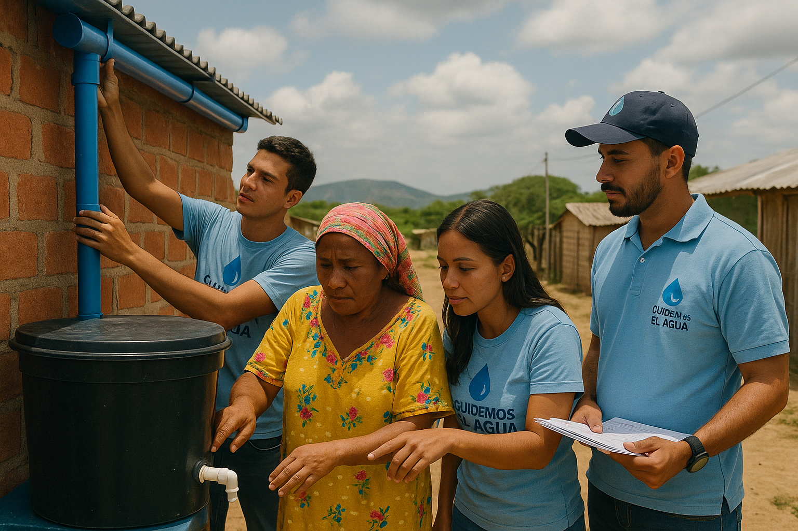

Dónde Trabajamos
Actualmente enfocamos nuestras acciones en comunidades rurales y municipios con escasez de agua en Colombia, incluyendo zonas vulnerables de Barranquilla, Santa Marta y otras regiones del Caribe.
En el Caribe colombiano, enfrentamos desafíos como la sequía estacional, la contaminación de fuentes hídricas y la falta de infraestructura de saneamiento. Nuestros proyectos en Barranquilla y Santa Marta incluyen la instalación de sistemas de recolección de agua lluvia y filtros comunitarios.
También trabajamos en municipios como La Guajira, donde la escasez de agua afecta a comunidades indígenas Wayúu. Aquí, implementamos soluciones sostenibles como pozos solares y talleres de capacitación en gestión hídrica.
Nuestro objetivo es expandir nuestro alcance a otras regiones de Colombia, como el Chocó y el Amazonas, para abordar problemas de acceso al agua potable y promover la resiliencia climática en comunidades vulnerables.